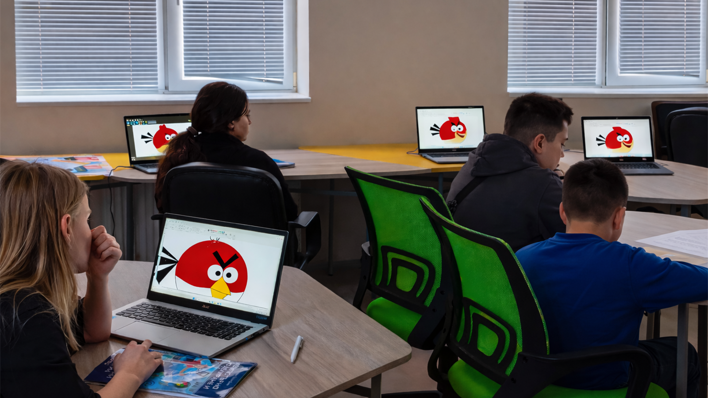

В обучението по компютърно моделиране в 5. клас се стремя да свързвам учебното съдържание с интересите и света на учениците. За тази цел в уроците интегрирам популярни и познати за тях герои и елементи от съвременната дигитална култура, което повишава тяхната мотивация и ангажираност в учебния процес.
Един от примерите за подобен подход е създаването на спрайт чрез графичния редактор в средата на Scratch, при което учениците разработват собствен персонаж, вдъхновен от популярната игра Among Us. В следващ етап създаденият герой се използва за решаване на практически задачи.
Чрез различни програмни блокове учениците „обучават“ своя спрайт да изпълнява определени действия, като например чертане на геометрични фигури.
